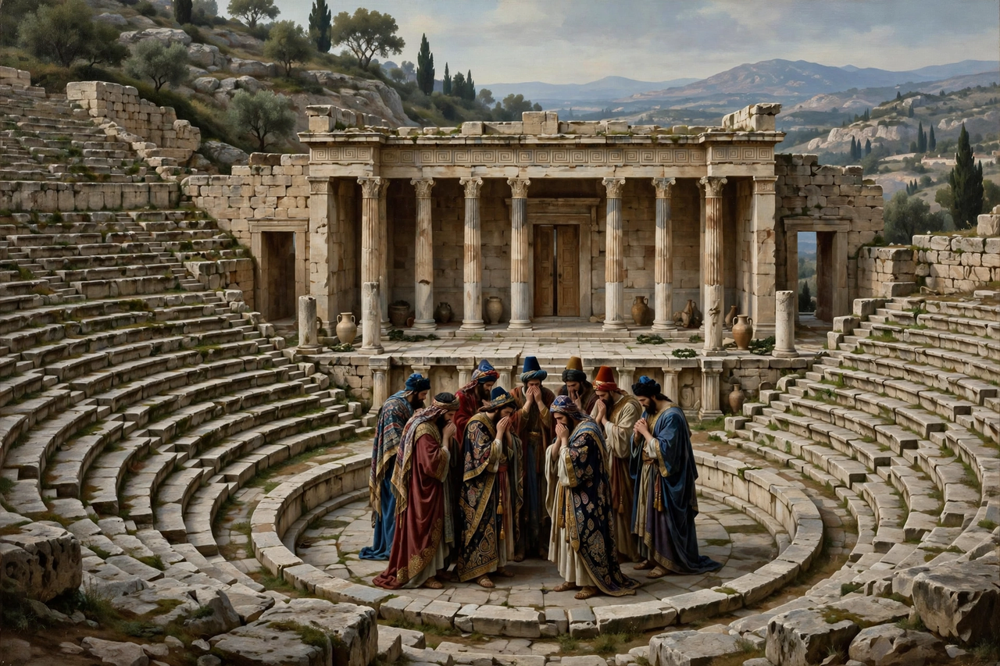

The Persians
| Author | Aeschylus |
|---|---|
| First performed | 472 BC, Athens (City Dionysia) |
| Genre | Greek tragedy |
| Setting | Susa, the Persian royal court |
| Subject | Persian defeat at the Battle of Salamis |

The Persians (Ancient Greek: Πέρσαι, Persai) is an ancient Greek tragedy written by Aeschylus in 472 BC. It is the second and only surviving part of a trilogy that won first prize at the Dionysia festival that year. Uniquely among surviving Greek tragedies, it dramatizes a recent historical event — the Persian defeat at the Battle of Salamis in 480 BC — instead of a mythological subject, and it is the oldest surviving play in the Western theatrical tradition.
Plot
The play is set at Susa before the tomb of Darius. A chorus of Persian elders and Queen Atossa await news of King Xerxes' expedition against Greece. Atossa recounts a troubling dream; a messenger then arrives with an account of the catastrophe at Salamis, where the Greek fleet destroyed the Persian armada. The ghost of Darius rises from his tomb, condemns his son's hubris in bridging the Hellespont and invading Greece, and prophesies further defeat at Plataea. The play ends with the return of the ragged Xerxes and a long communal lament (kommos) shared between king and chorus.
Themes and significance
Remarkably, the tragedy is written from the Persian point of view: the enemy's grief is its whole subject, and no Greek character appears on stage. Aeschylus himself had fought at Marathon and probably at Salamis, and the play combines patriotic celebration with a universal warning against hubris. The trilogy's other plays, Phineus and Glaucus Potnieus, are lost. The Persians was revived in Sicily at the request of Hieron I of Syracuse, near Gela's sphere of Greek Sicily, and remains a touchstone in discussions of tragedy, catharsis, and the representation of the enemy in wartime.